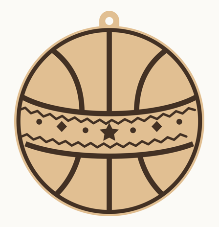
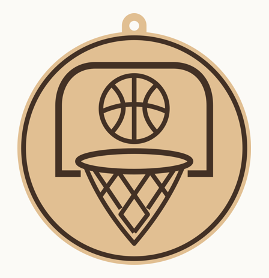
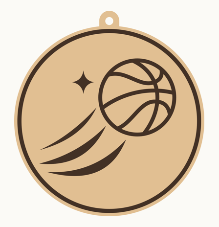
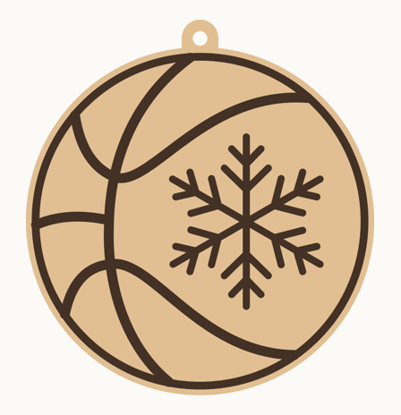
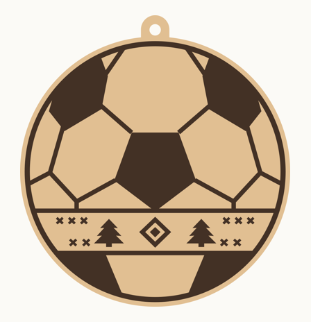
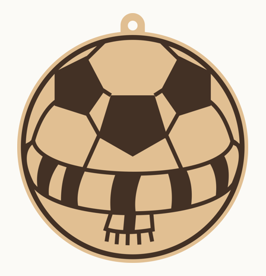
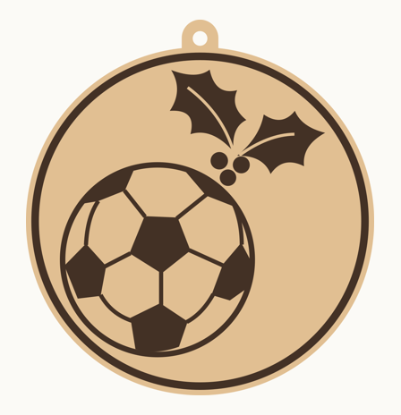
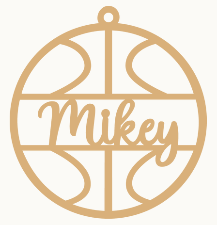

Engraved faceCourtside KnitA star, diamonds and zigzags wrap across the ball.Laser SVG PNG
Engraved faceNothing but NetA backboard and woven net frame a ball above the rim.Laser SVG PNG
Engraved faceFast BreakA flying ball with tapered motion lines and a single sparkle.Laser SVG PNG
Engraved faceSnow DayA six-armed snowflake fills one curved basketball panel.Laser SVG PNG
Engraved faceTouchline KnitA Christmas knit stripe with fir trees, a diamond and cross stitches.Laser SVG PNG
Engraved faceSupporter’s ScarfA striped winter scarf wraps the ball and ends in a short fringe.Laser SVG PNG
Engraved faceHolly CupA black-and-white soccer ball under a pair of holly leaves.Laser SVG PNG
Mikey · SoccerJoined script, open ball seams and a hanging eyelet. 31 closed cut contours; fabrication untested.Laser SVG · Prepared PNG · Cut inspection · Reference · Construction · Photo and vector comparison
Mikey · BasketballJoined script, open ball seams and a hanging eyelet. 22 closed cut contours; fabrication untested.Laser SVG · Prepared PNG · Cut inspection · Reference · Construction · Photo and vector comparison